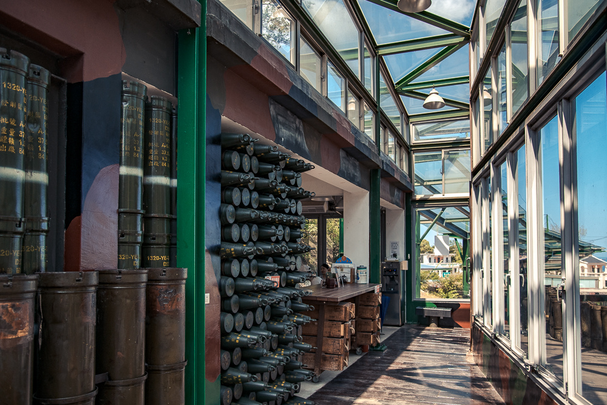

以下是幾個推薦：
獅山砲陣地(震東坑道)是金門熱門的軍事旅遊景點，為國內現存唯一的坑道式榴彈砲陣地，必看的獅山砲陣地砲操表演，除了能讓沒當過砲兵的朋友們認識巨大的八吋榴砲(M115)發射流程，順道稍稍感受當時國軍經歷823砲戰等大小戰役的英勇情境。
獅山砲陣地休憩處，用砲彈做裝飾。
開放時間：每日 8:00 - 17:30
門票資訊：免費
砲操時間:每週四砲操停演，每日共六場，凡於週末及例假日，均增加上午9:00表演一場次。下午四場：13：30、14：30、15：30、16：30。
交通方式：